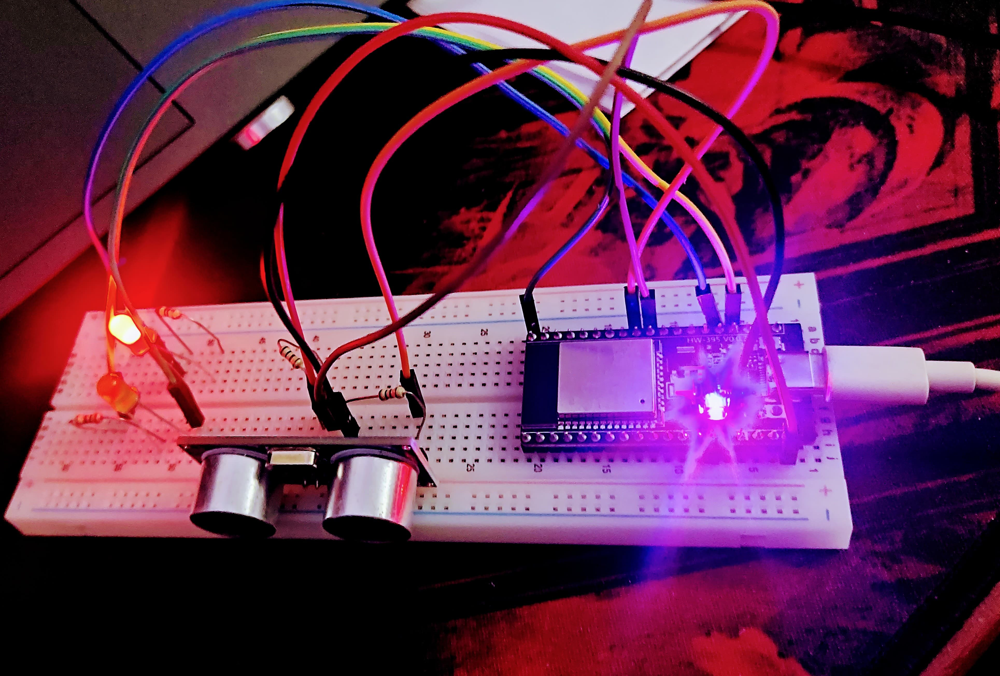
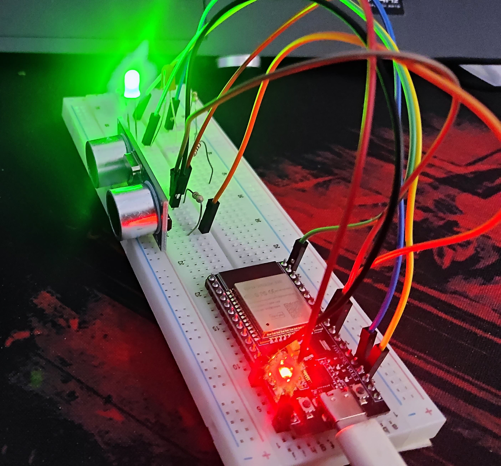

IoT-Based Smart Doorbell System
The IoT-based Smart Doorbell System is an innovative solution that enhances home security and convenience using the ESP32 microcontroller and C++ programming. This system integrates Wi-Fi connectivity, real-time notifications, and motion detection, making it an ideal choice for smart home applications.
Key Features
- Wireless Connectivity: Uses ESP32’s built-in Wi-Fi to send alerts to a smartphone or cloud-based platform.
- Motion Detection: Incorporates a PIR sensor to detect movement near the door and trigger alerts.
- Video Streaming (Optional): Can be extended with a camera module for real-time video feed.
- Buzzer & LED Indication: Provides audio-visual feedback when the doorbell is pressed.
- Remote Access & Notifications: Sends real-time alerts to a mobile app or web dashboard.
- Low Power Consumption: Optimized to run efficiently on battery or power adapter.
Working Principle
- When a visitor presses the doorbell button, the ESP32 microcontroller processes the input.
- A notification is sent to the user’s smartphone or cloud server.
- If motion is detected, the system captures an image (if a camera is used) and logs the event.
- The user can access the data remotely and respond accordingly.
Gallery


Back to Home